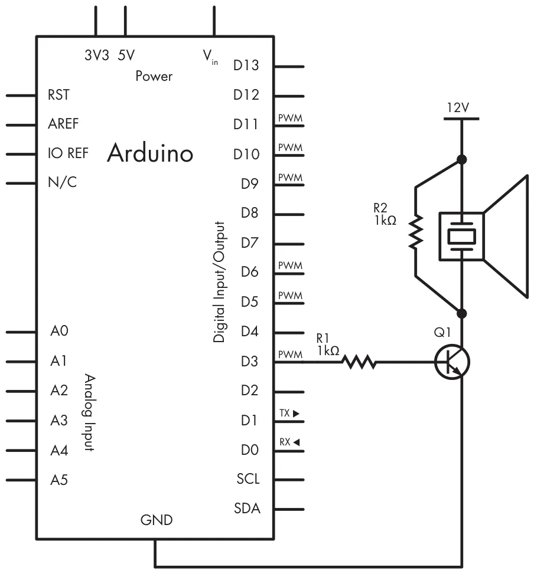

If you have a piezo handy and want to try it out, upload the following demonstration sketch to your Arduino:
// Project 7 - Trying Out a Piezo Buzzer
#define PIEZO 3 // pin 3 is capable of PWM output to drive tones
int del = 500;
void setup()
{
pinMode(PIEZO, OUTPUT);
}
void loop()
{
❶ analogWrite(PIEZO, 128); // 50 percent duty cycle tone to the piezo
delay(del);
digitalWrite(PIEZO, LOW); // turn the piezo off
delay(del);
}This sketch uses pulse-width modulation on digital pin three. If you change the duty cycle in the analogWrite() function (currently it’s 128, which is 50 percent on) at ❶, then you can alter the volume of the buzzer.
To increase the volume of your piezo, increase the voltage applied to it. The voltage is currently limited to 5 V, but the buzzer would be much louder at 9 or 12 V. Because higher voltages can’t be sourced from the Arduino, you would need to use an external power source for the buzzer, such as a 9 V battery, and then switch the power into the buzzer using a transistor as an electronic switch. You can use the same sketch with the schematic shown in Figure 4-39.

The part of the schematic labeled 12 V will be the positive side of the higher-power supply, whose negative side will connect to the Arduino GND pin.